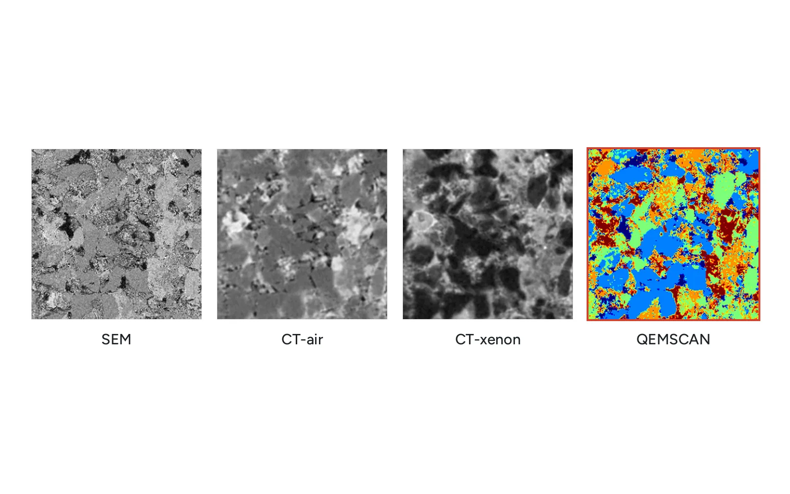
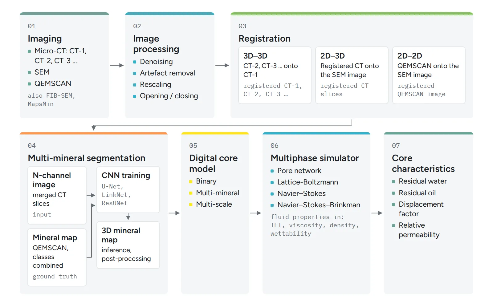
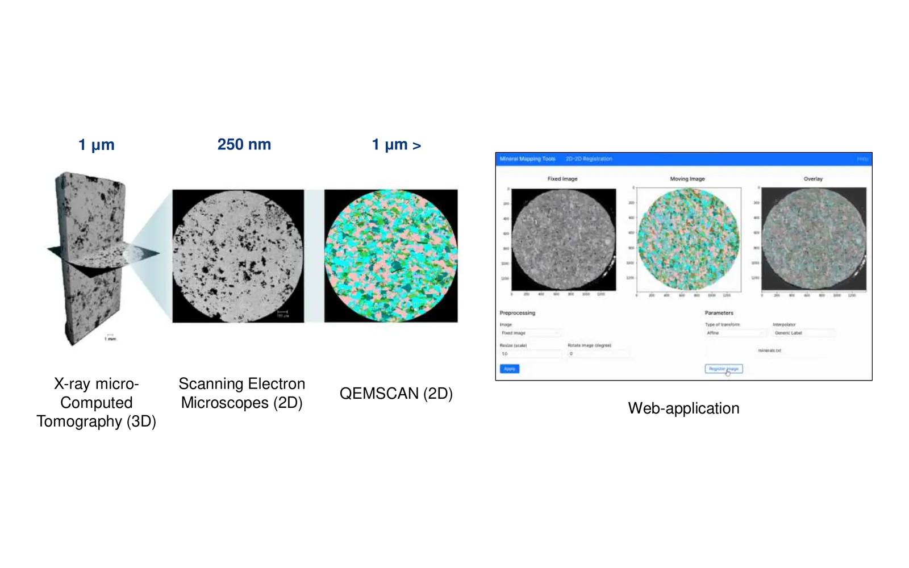

Digital rock from core micro-CT
At Skoltech I built the image side of a digital rock workflow: micro-CT, SEM and QEMSCAN images of core turned into 3D multi-mineral models that flow simulators can use to estimate the permeability of tight, microporous rock. I joined as an intern in 2020 and led the computer vision team from 2022 to 2023, working remotely from Yerevan.
The problem
Digital rock physics estimates petrophysical properties from images of core, quickly and without destroying the sample. It has two stages: build a model of the rock from images, then simulate flow on that model. The first stage is where tight rock breaks the usual recipe.
Three issues made it hard. First, many pores in tight sandstone are smaller than a micro-CT voxel. A model built from a dry CT scan misses them and loses the pore connectivity that a permeability calculation needs. Second, classical thresholding and marker-based segmentation cannot separate minerals with similar grey levels, so they do not give usable mineral maps. Third, each instrument sees a different slice of the truth. Micro-CT is 3D at micrometre scale, SEM is 2D and resolves features down to 250 nm, and QEMSCAN gives 2D mineral labels. Combining them means aligning images that differ in dimension, scale and contrast.
Approach
The pipeline runs from microanalysis results (micro-CT, SEM, FIB-SEM, mineral maps) through image processing to a digital core model (binary, multi-mineral, multi-scale). That model feeds a multiphase simulator (pore network, lattice Boltzmann, Navier-Stokes or Navier-Stokes-Brinkman) to predict core properties such as residual water and oil saturation, displacement factor and relative permeability.
Denoising. I applied Deep Image Prior and GAN-based denoising to micro-CT, alongside classical filters, and ran a statistical comparison of deep learning against classical methods to decide what to use downstream.
Multi-mineral segmentation. I trained U-Net, LinkNet and ResUNet with several pretrained backbones, plus a pix2pix GAN, to predict mineral maps from SEM images of arkose sandstone from the Achimov formation. The dataset paired SEM images with SEM-EDS mineral maps. A combined Dice and Focal loss handled the strong class imbalance, and U-Net with an EfficientNet-B4 backbone was the most suitable model.
Registration. I implemented slice-to-slice, slice-to-volume and volume-to-volume registration so that SEM and QEMSCAN sections could be placed inside the CT volume and several CT scans of the same sample could be aligned with each other. A small web application exposed 2D-2D registration with preprocessing, transform type and interpolator settings. Later I added a coarse-to-fine pre-registration step with multi-resolution matching, which made registration ten times faster.
Sub-resolved porosity. On a tight sandstone, the team scanned the sample dry and again after saturating it with xenon. A hybrid processing method then labelled each voxel as solid, pore or porous, which gives a model for permeability with the Stokes-Brinkman equation. This became the Fuel paper and a public dataset.
Results



- Registration became ten times faster after the coarse-to-fine pre-registration step.
- The xenon-enhanced CT method was published in Fuel in 2022, with the CT data released openly.
My role
Computer Vision Intern (September 2020 to September 2021) and Junior Computer Vision Researcher (September to December 2021) in Moscow. I built the preprocessing, denoising, segmentation and registration parts of the pipeline and evaluated the models.
Lead Computer Vision Engineer (July 2022 to July 2023), remote from Yerevan. I supervised a team of engineers working on image processing, registration, model training and evaluation, and flow simulation on porosity and mineral models, and I designed the faster pre-registration scheme.
Stack
- Python
- PyTorch
- U-Net, LinkNet, ResUNet
- pix2pix GAN
- Deep Image Prior
- Multi-resolution image registration
- Micro-CT, SEM, SEM-EDS, QEMSCAN
- Stokes-Brinkman flow
Outputs
- Multi-mineral segmentation of SEM images using deep learning techniques. SPE Russian Petroleum Technology Conference, October 2021. First author.
- Mineral mapping of rock micro-images using computer vision and deep learning methods. ProGREss'21. First author.
- Lift the veil of secrecy in sub-resolved pores by Xe-enhanced computed tomography. Fuel, volume 328, 2022. Co-author.
- Xe-enhanced computed tomography, tight sandstone. Open dataset on Mendeley Data, 2022. Co-author.
- An intellectual system for fast and reliable automated core description development. 82nd EAGE Annual Conference, 2021. Co-author.
- Automated full-bore core description application for production purposes. From an idea to IT-product. Data Science in Oil and Gas 2021. Co-author.
- Talk: Automated full-bore core description system application in production. Use case example. Ways to Realize the Oil and Gas Potential of Western Siberia, Khanty-Mansiysk, January 2022. Co-author.
- Exhibition presentation: Digital core models for complex low-permeable rocks using deep learning techniques. TatOilExpo 2022, Kazan, September 2022.
- Hackathon: Aramco Upstream Solutions Technathon 2020, team of three. Task: reconstruct 3D digital rock models from 2D images. In the first week we proposed a fully unsupervised segmentation method, binarised all provided CT images and predicted porosity.